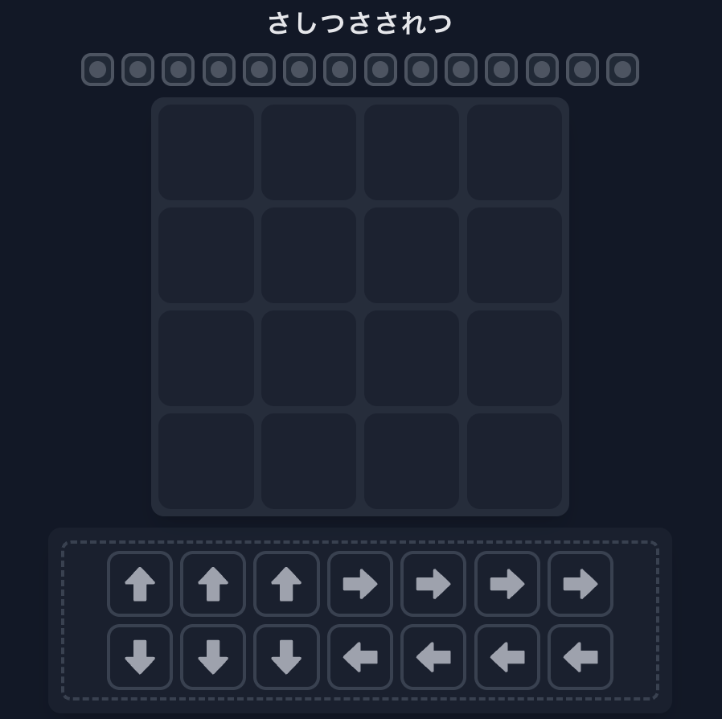

問題 25 ヒント
ヒント 1
矢印をタップし、盤面をタップすることで、盤面内に矢印を配置できます。下のエリアに戻すこともできます。
たくさん並べてみると、矢印に色がついたり、矢印の枠に色がついたりします。
上にあるのはランプです。これが光るのはどんなときでしょうか？
ヒント 2
緑に光っている矢印が多いほど、上のランプも多く光りますね。光り方は、中だけ光ったり、枠だけ光ったりします。盤面でも矢印の内部だけが緑だったり、枠だけが緑だったりします。この数にそれぞれ対応しているようです。
ランプは14個。矢印も14個なので、クリア条件は、すべての矢印が内部も枠も緑色に光ること、であると推察されます。
光る色には赤、青、緑の3種類がありますが、ひとまず色は気にせず、どんなときに光り、どんなときに光らないのかを、「矢印内部」についてと「枠」について、それぞれ特定してください。
ヒント 3
どんなときに枠が光るか、どんなときに矢印内部が光るか、下図でわかりやすいと思います。

内部が光っていない矢印は、なぜ光っていないのでしょうか。枠が光っていない矢印は、なぜ光っていないのでしょうか。
ヒント 4
矢印内部は、他の矢印を指しているとき（向いている方向に矢印があるとき）に、光ります。
矢印の枠は、他の矢印に指されているとき（その矢印の方を向いている矢印があるとき）に、光ります。
では、赤・青・緑の色の意味を特定してください。
ヒント 5
たくさんの矢印に指されていると赤くなります。逆に少ないと青いようです。緑になるためには、適正な数というのがあるようです。
適正な数がわかったら、あとはパズルです。
ヒント 6
矢印は14個なので、2マスだけ空きます。
少なくとも四隅のうちの2つは埋まるので、1つの隅に矢印をひとまず置いてみると、どこを空きマスにすべきかが見えてきます。
ヒント 7 ポイント
「指す数」が２個であるという条件が強力です。
ちょうど２つある方向にしか向けません。ということは、矢印が置かれる１４マスのうち、どのマスにも、他の矢印がちょうど２つある方向が存在する必要があります。そのような１４マスの埋め方は２通りしかありません（対称のものは同一視する）。
埋める場所が決まったら、向きもほとんど決まります。
解けない方は、下の解答をご覧ください。
解答を見たい方はこちら↓
解答を見る